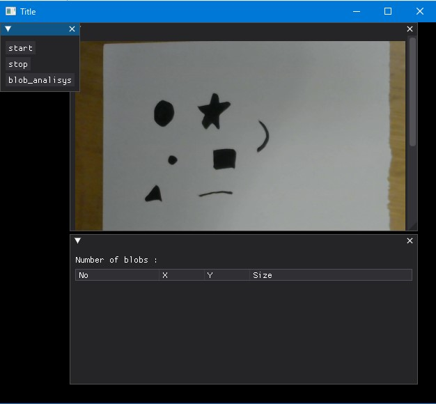
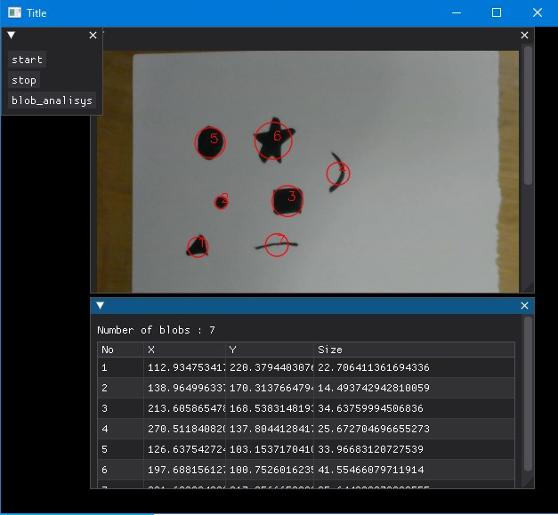

5th May 2024 at 6:51pm
今まで試してきた「画像の表示」「WEBカメラの利用」「テーブルの利用」を使って、
カメラから画像を取得し、画像処理を行い、その結果を表示するアプリケーションを作成してみます。
画像処理としては、ブロブ解析（OpenCVのSimpleBlobDetector_create関数）を行います。
私はDear PyGuiで、この一連のアプリケーションを作ってみたかったのです。
以下は、サンプルクリプト13です。
# サンプルスクリプト13
import os
import threading
import numpy as np
import cv2
import dearpygui.dearpygui as dpg
# UVCカメラは0で起動します。適当な番号にしてください。
# この時点でテクスチャーのサイズが決まります。
CAP = cv2.VideoCapture(0)
ret, frame = CAP.read()
CAP_W = int(CAP.get(cv2.CAP_PROP_FRAME_WIDTH))
CAP_H = int(CAP.get(cv2.CAP_PROP_FRAME_HEIGHT))
print(f"Width = {CAP_W}")
print(f"Height = {CAP_H}")
# 初期は[stop]の状態
isContinuousGrab = False
# 撮像した画像
frame = None
# ブロブ解析の結果
keypoints = None
# 描画されている表の行数
table_row_num = 0
# テクスチャー「dynamic_texture」に画像を登録します
def set_image_to_dynamic_texture(image):
image = cv2.cvtColor(image, cv2.COLOR_BGR2RGBA)
dpg.set_value("dynamic_texture", image/255)
# 連続撮像を行い、テクスチャー「dynamic_texture」に画像を登録します
def grab_and_set_image():
global frame
while isContinuousGrab:
ret, frame = CAP.read()
set_image_to_dynamic_texture(frame)
# テーブル「table01」にデータを表示します。同時に画像にインデックス番号の描画を行います。
def draw_table_and_index(image):
global isContinuousGrab
global keypoints
global table_row_num
if isContinuousGrab is not False:
return
if 0 < table_row_num:
for i in range(0, table_row_num):
dpg.delete_item(f"Row{i}")
num = len(keypoints)
for i in range(0, num):
with dpg.table_row(tag=f"Row{i}", parent="table01"):
ind = i+1
x = keypoints[i].pt[0]
y = keypoints[i].pt[1]
size = keypoints[i].size
dpg.add_text(str(ind))
dpg.add_text(str(x))
dpg.add_text(str(y))
dpg.add_text(str(size))
cv2.putText(image, str(ind), (int(x),int(y)), fontFace=cv2.FONT_HERSHEY_SIMPLEX, fontScale=0.5, color=(0,0,255), thickness=1)
dpg.set_value("blob_num", "Number of blobs : " + str(len(keypoints)))
table_row_num = num
return image
# [start]ボタンを押した時のコールバック
def button_start(sender, app_data, user_data):
global isContinuousGrab
if isContinuousGrab is not True:
isContinuousGrab = True
thread = threading.Thread(target=grab_and_set_image)
thread.start()
# [stop]ボタンを押した時のコールバック
def button_stop(sender, app_data, user_data):
global isContinuousGrab
if isContinuousGrab is not False:
isContinuousGrab = False
# [blob_analisys]ボタンを押した時のコールバック
def button_blob(sender, app_data, user_data):
global isContinuousGrab
global keypoints
if isContinuousGrab is not False:
return
params = cv2.SimpleBlobDetector_Params()
params.filterByArea = True
params.minArea = 100
params.maxArea = 2500
params.filterByCircularity = False
params.filterByColor = False
params.filterByConvexity = False
params.filterByInertia = False
detector = cv2.SimpleBlobDetector_create(params)
keypoints = detector.detect(frame)
blank = np.zeros((1, 1))
img_blobs = cv2.drawKeypoints(frame, keypoints, blank, (0, 0, 255), cv2.DRAW_MATCHES_FLAGS_DRAW_RICH_KEYPOINTS)
img_blobs = draw_table_and_index(img_blobs)
set_image_to_dynamic_texture(img_blobs)
# 以下、DearPyGuiの基本構成
dpg.create_context()
dpg.create_viewport(title='Title', width=640, height=480)
# テクスチャーレジストリの作成
with dpg.texture_registry():
img_white = np.ones((CAP_W, CAP_H, 4), np.uint8)
dpg.add_dynamic_texture(CAP_W, CAP_H, img_white, tag="dynamic_texture")
# window01の作成（ボタンの作成）
with dpg.window(tag="window01"):
dpg.add_button(label="start", callback=button_start)
dpg.add_button(label="stop", callback=button_stop)
dpg.add_button(label="blob_analisys", callback=button_blob)
# window02の作成（画像の表示）
with dpg.window(tag="window02", pos=(100,0), width=500, height=300):
dpg.add_image("dynamic_texture", tag="dynamic_image")
# window03の作成（テーブルの表示）
with dpg.window(tag="window03", pos=(100,300), width=500, height=100):
dpg.add_text("Number of blobs : ", tag="blob_num")
with dpg.table(header_row=True,
resizable=True, policy=dpg.mvTable_SizingStretchProp,
row_background=True,
borders_outerH=True, borders_outerV=True, borders_innerH=True, borders_innerV=True,
tag="table01"):
dpg.add_table_column(label="No", tag="HeaderNo")
dpg.add_table_column(label="X", tag="HeaderX")
dpg.add_table_column(label="Y", tag="HeaderY")
dpg.add_table_column(label="Size", tag="HeaderSize")
dpg.setup_dearpygui()
dpg.show_viewport()
dpg.start_dearpygui()
dpg.destroy_context()[start]でWEBカメラの連続撮像が開始され、[stop]で終了します。
[start] ⇒ [stop]で以下のような画像が得られたとします。

[blob_analisys]を押すと、ブロブ解析の結果がテーブルに表示されます。

cv2.SimpleBlobDetector_***については、詳しくはcv::SimpleBlobDetectorクラス リファレンスをご覧ください。
非常に簡単にアルゴリズムを説明すると、「2値化 ⇒ 連結成分の抽出 ⇒ 距離によるグループ化 ⇒ フィルタリング」という処理を実行します。
フィルタリングの種類としては、面積（filterByArea）／真円度（filterByCircularity）／明るさ（filterByColor）／凸性（filterByConvexity）／慣性モーメント（filterByInertia）があります。
本例では面積（filterByArea）だけを使っています。
以下で得られた結果（keypoints）を「cv2.drawKeypoints」で撮像画像に書き込んでいます。
keypoints = detector.detect(frame)これくらいのプログラム量で出来てしまうのは驚きです！